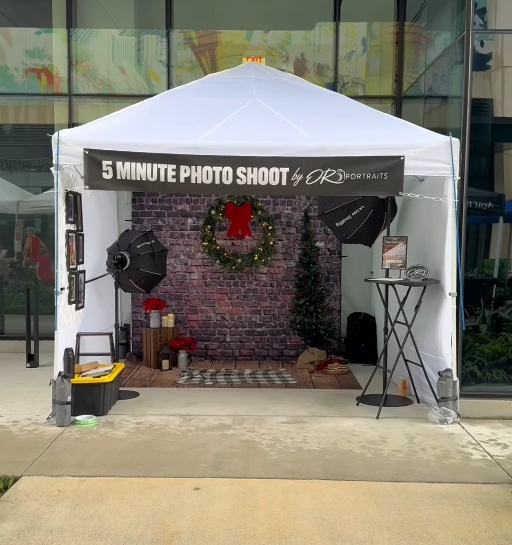
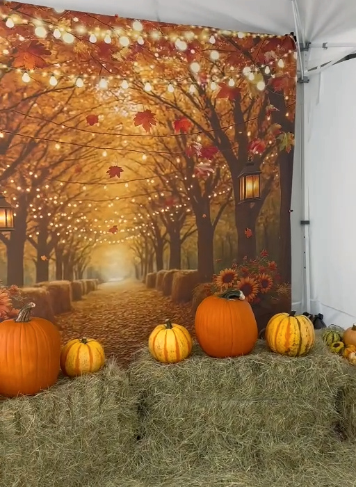
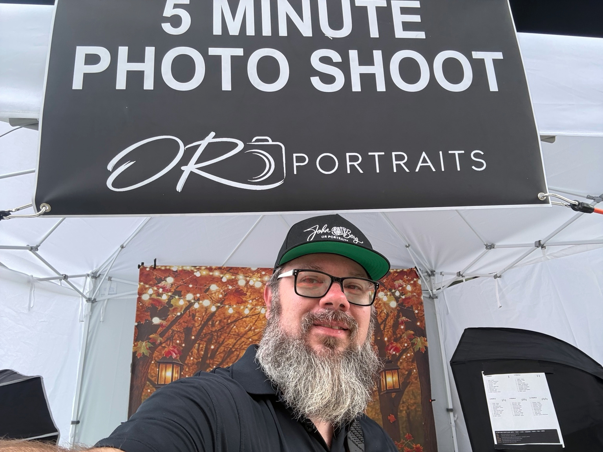

GOOD PORTRAITS CAN HAPPEN ANYWHERE.
Small tent.
Big portrait
energy.
A canopy. A camera. A little creative chaos. Welcome to Tent Boy’s corner of the pop-up portrait world.
Pack it up. Pop it open. Make something good.

01 / THE KIT
What goes
under the tent.
Start with the setup, then find the pieces that fit your space and the way you shoot. These are gear categories to explore; explore the first product pick below, with more to come.


02 / OUT IN THE WORLD
It’s a tent.
Until it’s a studio.
The real setup is part gear, part scene-building, and part making the most of the space you have. These photos come from the Tent Boy setup itself.
- Build the base.Plan the footprint, canopy and backdrop before adding the extras.
- Shape the light.Leave room for your lights, your subject and a clear path through the set.
- Give it some character.A seasonal scene can turn a small space into a whole mood.
A FEW THINGS BEFORE YOU PACK
Do I need every piece of gear?
Use this page as a planning resource. Choose equipment for your location, available power, camera system and working space. Exact models will be added once the product list is confirmed.
Where do purchases happen?
When links are available, gear links will take you to Amazon and the PDF purchase will take you to Payhip. This website does not collect payments.
What should I check before setting up outdoors?
Check the venue’s requirements, weather conditions and your canopy manufacturer’s anchoring instructions. Keep walkways and cables clear, and use equipment suitable for the location.